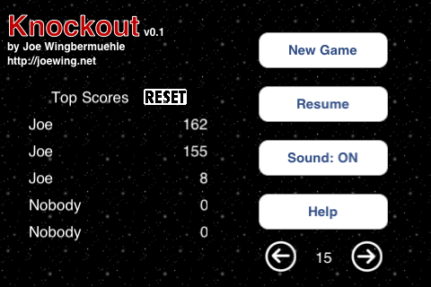
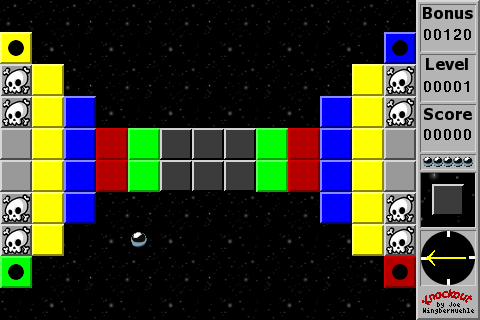

Knockout is a game for the iPhone/iPod touch. The object is to clear all
the solid blocks from a level with a ball as fast as possible.
I stopped paying for the iOS developer program, so Knockout is no
longer available via the App Store, but I may make the source available.
The start screen:

Level 1:

Tilt to control the ball's direction. Only one type of block may be cleared at a time. When a level is first started or restarted (after loosing a ball), dark gray blocks may be cleared. Switch blocks (those blocks with a black ball in the center) change the type of block that may be cleared. When all other solid blocks are cleared, light gray blocks may be cleared. Skull blocks take away one ball and restart the level. Note that it is necessary to loose a ball if a switch block is hit before clearing all dark gray blocks. Brick blocks cannot be broken.